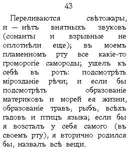
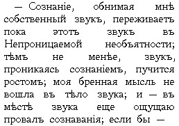
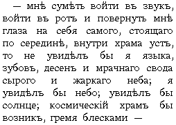
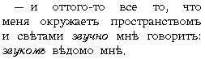

Glossolalia (Section 43)
GLOSSOLALIA

Light-heats flow over one another; and there are -- no comprehensible sounds (the sonants and explosives have not yet condensed); in my own flamy mouth are all sorts of thunder-horned self-generates; I retired into my own mouth: to look at the universe of speech; and if I could look at the formation of the mainlands and seas of that life, the formation of the grasses, fishes, all reptiles and birds of the tongue; if I were to arise in myself (inside of my mouth), I would be born for a second time, I would have named all things.
Parodying my own self, I will say: --

-- Consciousness, as it embraces my very own sound, survives as long as this sound is in the Impenetrable unboundedness; none the less, a sound, penetrated by consciousness, puffs up in growth; my mortal thought did not enter into the body of sound; and -- in the place of sound I sense the collapse of being conscious; if --

-- I would be able to enter into the sound, to enter into the mouth and turn my eyes in upon myself, standing in the center, inside the temple of the lips, then I would not have seen the tongue, the teeth, the gums and the murky vault of the damp and hot palate: I would have seen the sky; I would have seen the sun; the cosmic temple would have arisen, thundering in gleams --

-- and therefore everything that surrounds me with space and lights speaks to me sonorously: it is known to me via sound.